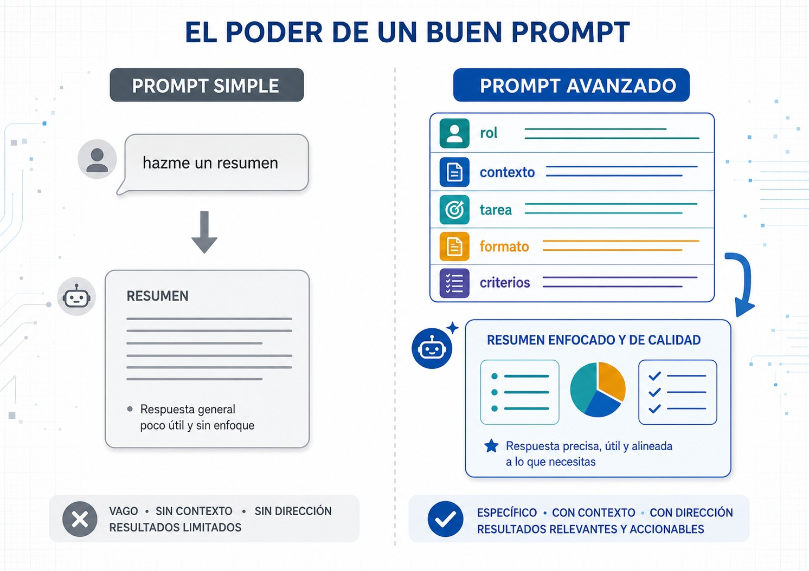
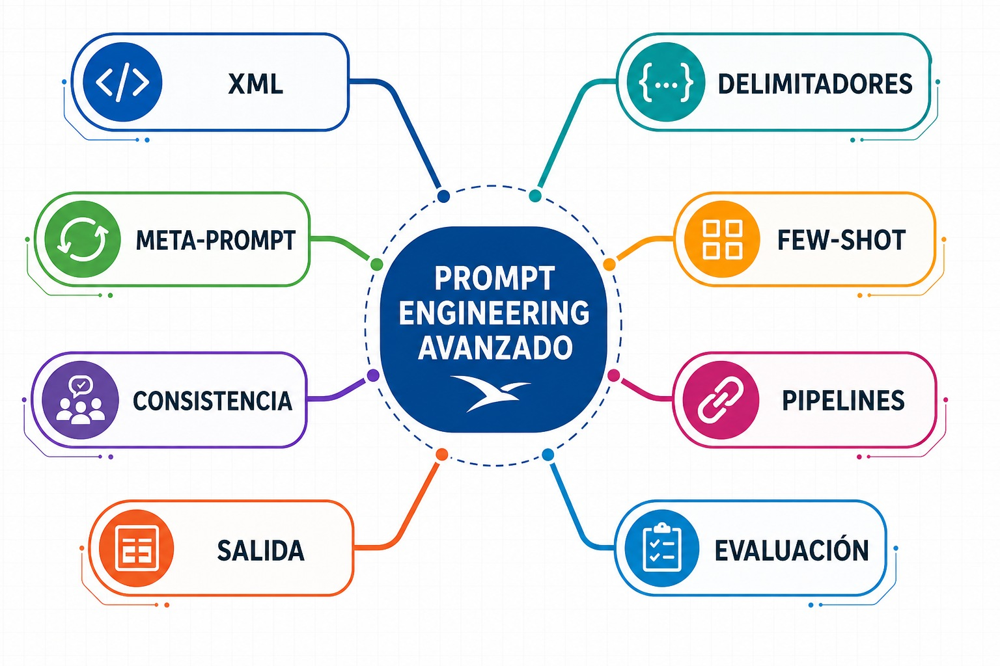
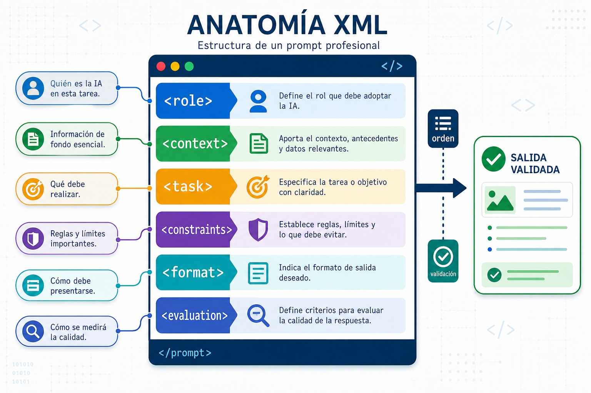
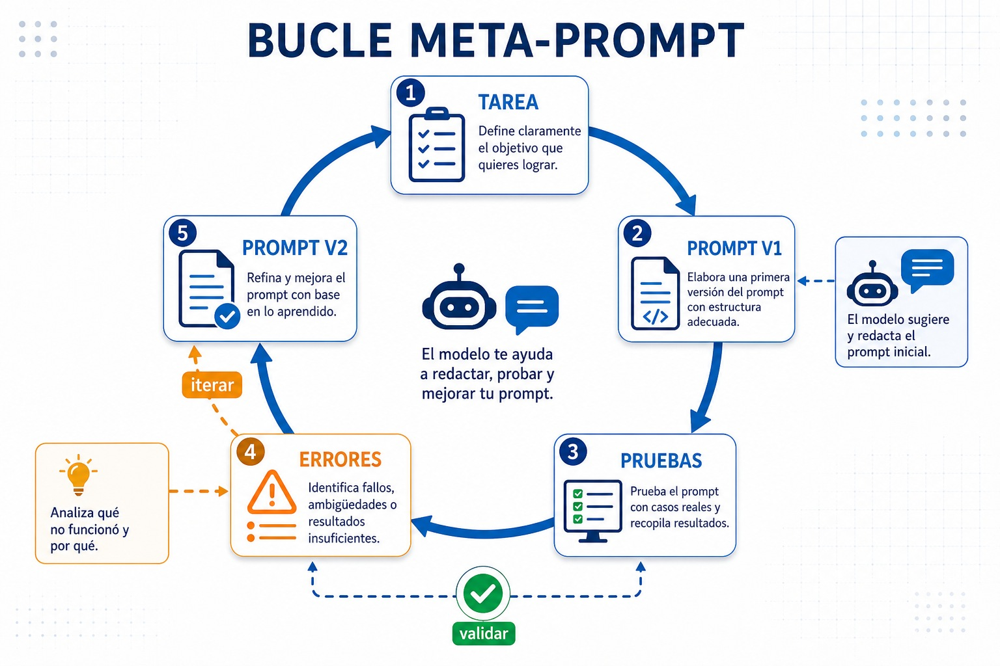
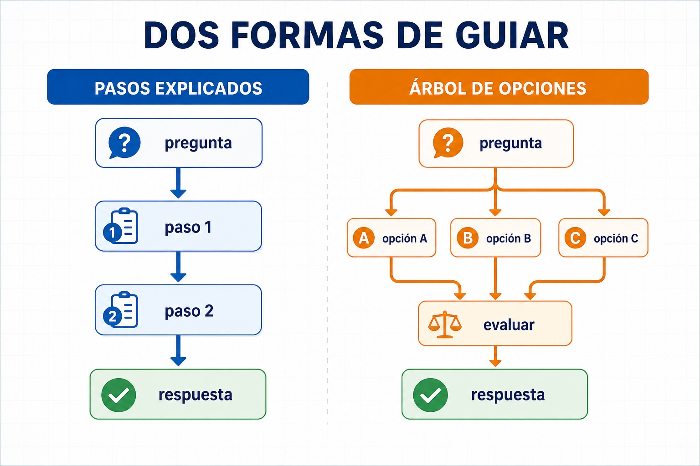
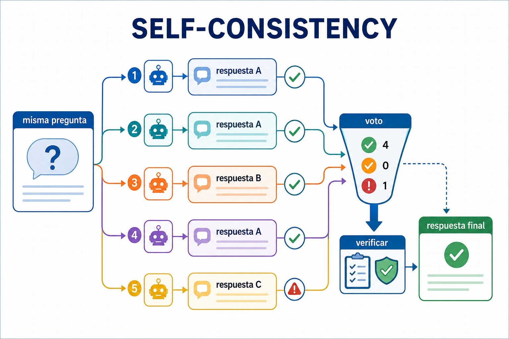
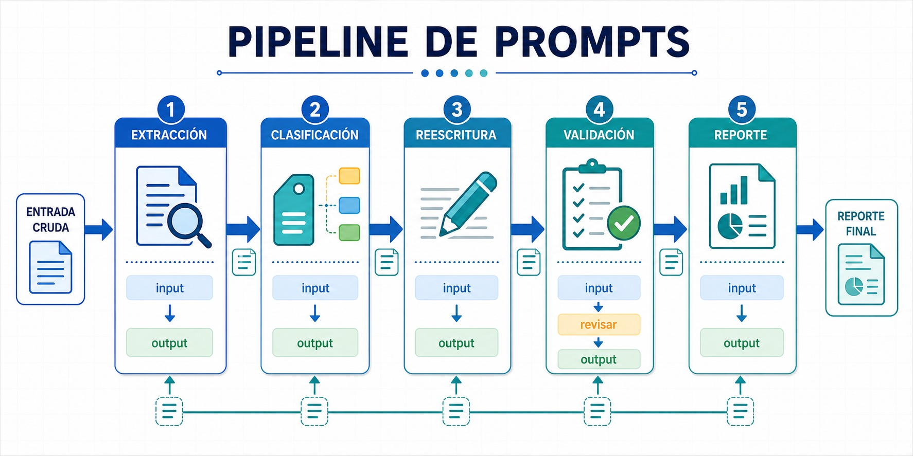
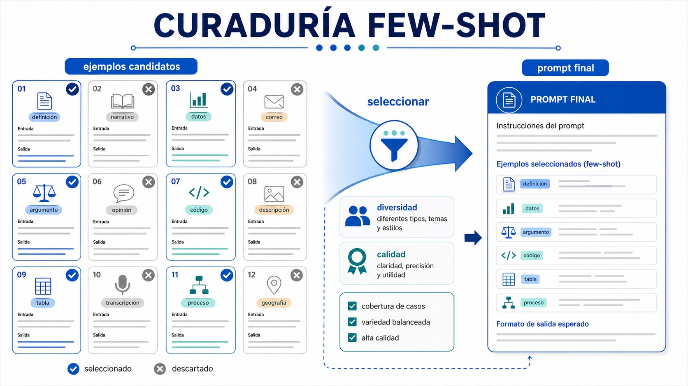
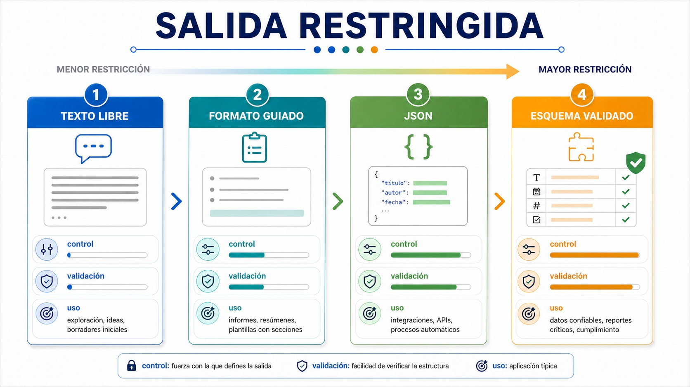
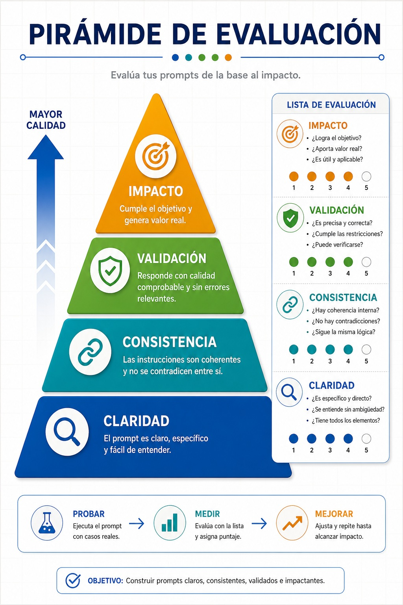

Manual 4 / IA Avanzada / Primer manual
Construir un sistema de prompts versionados para el Asistente Institucional Albatros, con estructura, evaluacion y salidas controladas.

La institucion ya usa IA, pero cada area escribe prompts distintos, guarda versiones en chats sueltos y obtiene respuestas inconsistentes. Direccion pide ordenar el proceso antes de conectar documentos, agentes o automatizaciones.
La primera capa del Asistente Institucional no es una app: es una biblioteca de instrucciones confiables. Un buen prompt debe tener estructura, contexto, formato de salida, criterios de calidad y version.

Los delimitadores reducen ambiguedad. Separan rol, tarea, contexto, restricciones, ejemplos y salida esperada. En una institucion esto permite auditar y reutilizar instrucciones.

Meta-prompting significa pedir a la IA que ayude a mejorar el propio prompt. No se delega el criterio; se usa la IA como revisor de estructura, claridad, huecos y riesgos.

| Paso | Accion | Evidencia |
|---|---|---|
| 1 | Escribir prompt inicial. | Version 0.1. |
| 2 | Pedir critica estructurada. | Lista de mejoras. |
| 3 | Aplicar cambios. | Version 0.2. |
| 4 | Probar con casos reales. | Resultados comparables. |
Un prompt avanzado no siempre necesita explicaciones largas. A veces conviene guiar con pasos; otras veces conviene pedir criterios y salida breve. La decision depende de riesgo, trazabilidad y costo.

Para tareas institucionales, pide razonamiento verificable en forma de criterios, no cadenas internas extensas. Lo importante es poder revisar la decision.
Self-consistency compara varias respuestas antes de elegir una. Un pipeline divide una tarea grande en subtareas: interpretar, extraer, validar, redactar y revisar.


Few-shot muestra ejemplos de entrada y salida. La salida restringida exige que el modelo responda en una estructura fija, por ejemplo JSON, tabla o checklist.


Un prompt institucional no se aprueba porque "suena bien". Se prueba con casos, se califica con rubrica y se versiona. La evaluacion evita que cada usuario ajuste a ojo.

| Criterio | Pregunta de revision |
|---|---|
| Exactitud | La respuesta respeta la fuente? |
| Formato | Sale exactamente como se pidio? |
| Consistencia | Funciona en varios casos? |
| Seguridad | Evita datos sensibles o recomendaciones indebidas? |
Rol: lider de prompts del Asistente Institucional Albatros.
Escenario: tres areas entregan prompts desordenados. Debes convertirlos en plantillas versionadas y evaluables.
Producto: biblioteca con tres prompts: soporte academico, respuesta a reglamento y resumen de solicitud. Cada prompt debe tener version, objetivo, estructura, formato de salida y rubrica.
| Criterio | Logro esperado |
|---|---|
| Estructura | Usa delimitadores claros. |
| Evaluacion | Incluye rubrica con al menos cuatro criterios. |
| Gobernanza | Incluye version, responsable y limite de uso. |